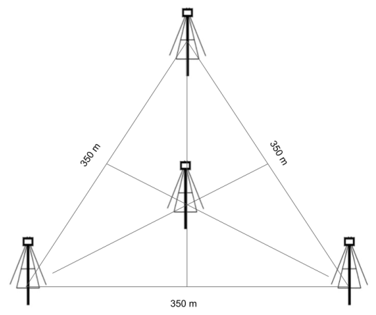

The DLITE Project
Deployable Low-band Ionosphere and Transient Experiment (DLITE) arrays are comprised of four dipole antennae that operate at 30-40 MHz in the radio band, below FM radio stations. DLITE is capable of resolving the brightest radio sources, meaning DLITE is able to tell the difference between two sources that look very close together in the sky.
Observing Targets
The primary targets for DLITE are the so-called A Team: Caseopia A, Cygnus A, Hercules A, and Virgo A. These radio bright sources allow us to use DLITE to probe different lines of sight through the ionosphere and see how radiation from the sun, weather patterns, and other phenomena interfere with the composition and the turbulence of the ions in this layer of our atmosphere. In this sense, the A Team sources are like bright flashlights being pointed toward you in a dark, dusty room that allows you to see the movement and density of the dust between you and the flashlight. DLITE can also see the sun, which emits not only optical light which we can see with our eyes, but in many other wavelengths, like ultraviolet, infrared, and radio. The sun has an atmosphere, although it is very difficult to study this region of the sun because the light it emits is minimal compared to the other regions. However, during a total solar eclipse, the moon covers the sun, making observations of the sun’s atmosphere possible. Using our DLITE telescope in the path of totality, we aim to observe and constrain the radius of the radio emission in the sun’s atmosphere at 35 MHz.
 DLITE telescope antenna. DLITE telescope antenna.
DLITE telescope antenna.